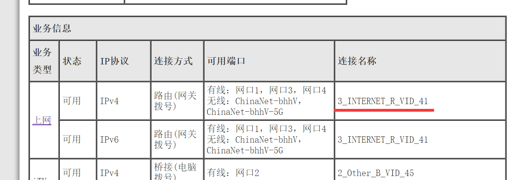
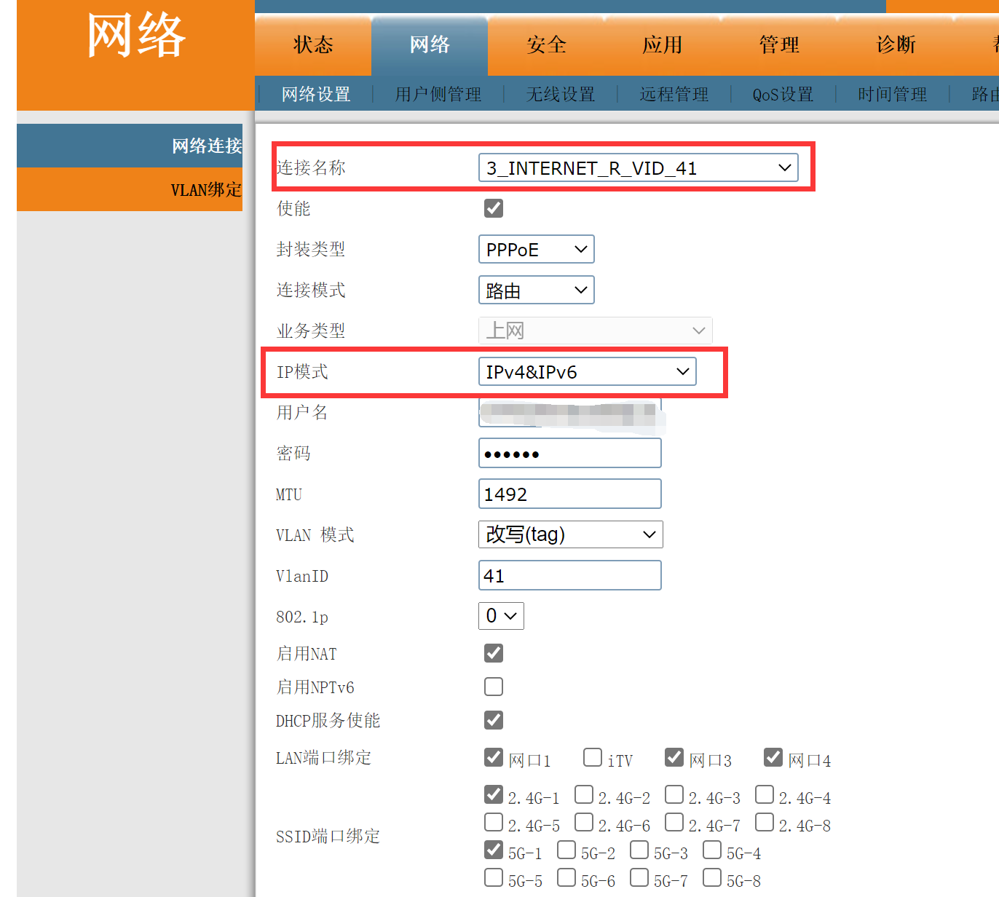
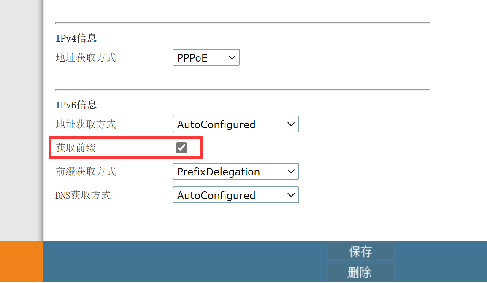
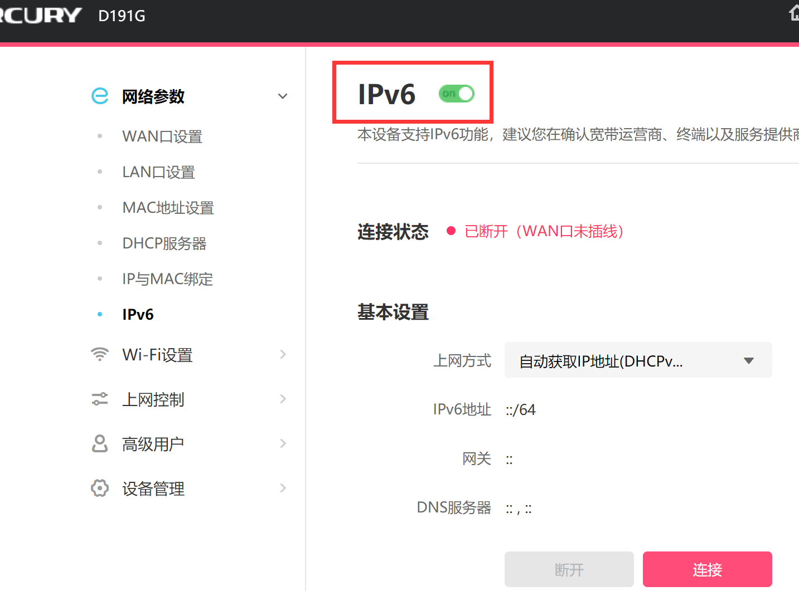
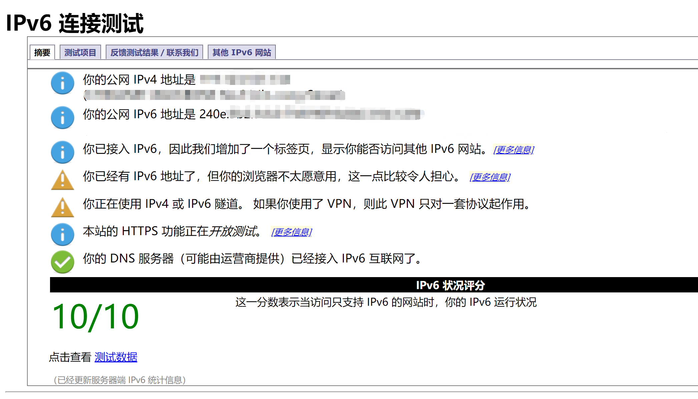
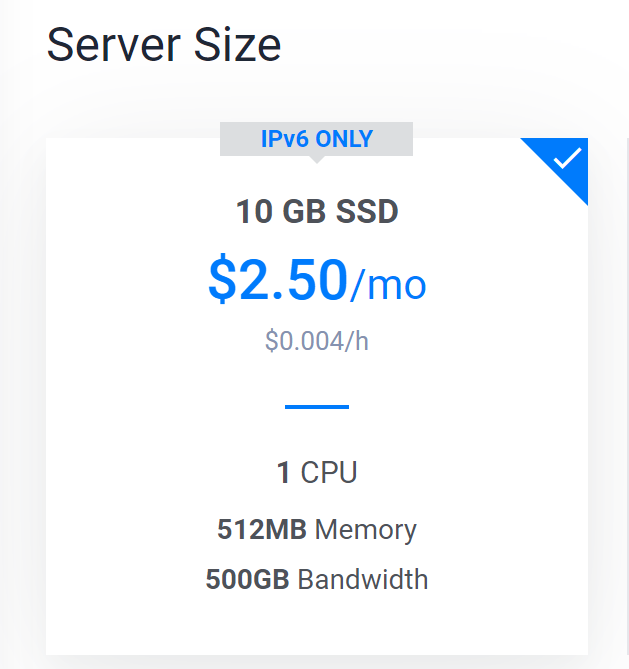
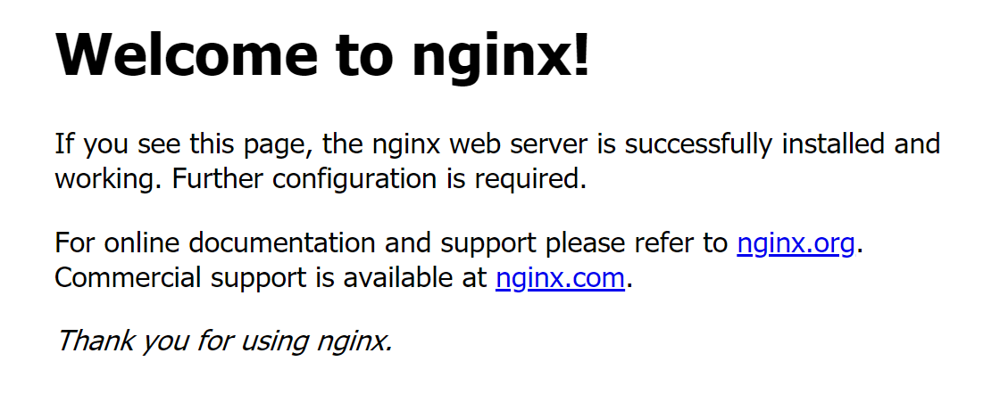
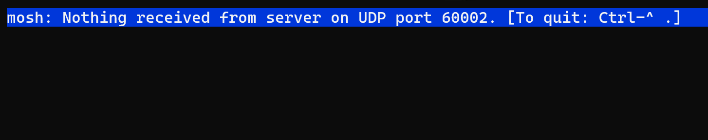

折腾IPv6的一天
不想学习的一天。
看无聊新闻的时候得知现在IPv6已经比较成熟（个屁），家庭宽带基本上都能启用IPv6。所以就有了折腾IPv6的想法。
家庭宽带虽然可以启用IPv6服务，但是默认是不启用的（不知道什么原因，据说是装宽带的师傅省事？）。
所以要进入IPv6的世界，要自己动手配置光猫的设置。
我家是电信的宽带，光猫是中兴生产的。百度查了它的超级管理员账号密码是：1
2telecomadmin
nE7jA%5m
一试就直接登录进去了，这一步我进行的非常顺利。
启用IPv6的步骤网上能找到，说实话这方面的资料不是很多，有的都是比较久远的贴子在讨论。
进入光猫的超级管理员界面后，先看上网功能的连接名称。

然后找到如图所示的界面，设置对应连接名称的网络连接参数。
把IP模式从IPv4改为IPv4&IPv6，这样光猫就同时支持IPv4和IPv6了。

然后是IPv6方面的设置，其中获取前缀要勾上。其他的地址获取方式、前缀获取方式、DNS获取方式，我也不清楚该怎么填。我找到的教程的设置方式在我的光猫里没有对应的设置，所以我就全部弄成AutoConfigured了。
搞完这些设置，点保存，然后重启光猫。再次连上网络后，我的电脑获取到了IPv6的地址，而且确定了不是局域网的IPv6地址。

然后我就找了个IPv6的测试网址，一系列检测之后说我无法访问IPv6。
这时候我是有点迷惑的，明明都获取到IPv6地址了，怎么会访问不了呢？我以为是光猫没设置对，所以又去查了一些资料。
后来才发现，其实光猫设置的没错。真正原因是我的代理软件的IPv6设置没开。打开之后就可以了。

然后我又想起路由器也有个IPv6的开关，一起开启了。

至此，我成功通过了测试网站的检测。

然后我就买了个IPv6 Only的vps，想要试一下是不是真的能连上。（其实我是想找现成的IPv6的网站来测试的，但是国内的纯IPv6网站我没找到，要么就是找到了几年前的信息，已经访问不了了。而国外的IPv6网站又访问不上，被墙了）

ssh毫不意外的连上了。
又装了个Nginx，解析到ipv6.uint128.com。看到了熟悉的 Welcome to nginx!。
而且我套了一层cloudflare CDN后，发现没有IPv6的设备也是可以访问的。
这个发现还挺惊喜的，这意味着IPv6 Only的服务器也是可以做Web服务器的。
我又把服务器解析到ipv6test.uint128.com，这个地址没有经过CDN，所以可以用来测试IPv6。如果你也能看到Welcome to nginx!，那么你的网络可以访问纯IPv6网站！

因为ssh直接连接国外的服务器实在是太卡了，操作起来很不舒服，所以我又打算装一个mosh(mobile shell)。因为mosh是基于UDP的，而且考虑了网络不佳的情况，所以会比ssh流畅一点。
这期间遇到了两个奇葩问题。
第一个是这个 mosh 没有 windows 客户端，所以我只能在 wsl 上用 mosh 连接，但是却出现了无法连接的情况。
因为 mosh 一开始是用 ssh 进行验证，然后才用 udp 进行通信。我就试了下在 wsl 中用 ssh 连接服务器。（之前都用的powershell的ssh客户端）
结果连接不上，提示：1
ssh: connect to host 2001:***:f888 port 22: Network is unreachable
很奇怪吧，我以为是系统问题，又用 ssh 连接了一台 IPv4 服务器，这 IPv4 可以很顺利的连上。
所以问题就是 wsl2 无法通过 ssh + IPv6 连接服务器。我猜到是 wsl2 的问题，但是我不知道怎么解决了。
我又装了个 wsl1 的系统。这次可以用 ssh + IPv6 连接服务器了。
第二个奇葩问题出现了，因为 mosh 还是无法工作。

防火墙是允许 mosh 的端口通信的，但是我试了很多次，mosh 都无法工作。